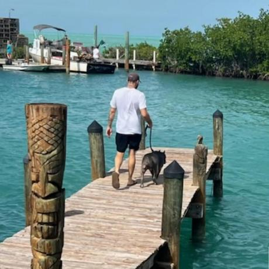

The creator / The purpose

Chase Allen Ringquist
Creator and maintainer of RabbitSoftware. Building research software that people can inspect, question, and control.
Chase Allen Ringquist is the creator and maintainer of RabbitSoftware, a project focused on local-first biomedical literature research, data provenance, and experimental systems software. His GitHub profile reflects an interest in connecting research tools, AI assistants, and inspectable records while keeping users in control of their data.
Why RabbitSoftware exists
The motivation behind RabbitSoftware is to make research easier to explore without making privacy, transparency, or access an afterthought. Through the website, downloadable terminal tools, and local research agent, Chase is building ways for users to find public literature, inspect sources, and read their own records without automatically uploading them to an AI service.
His public MaxwellDNA project explores research agents, peer-to-peer chains, and experimental genomics tooling. Related work includes medical-image segmentation research and locally running AI transcription tools. These projects point toward a recurring goal: bringing technical capabilities closer to the people using them, with greater visibility into where information comes from and how software handles it.
Evidence, consent, and control
RabbitSoftware turns that direction into practical interfaces. Public research remains separate from private account records; AI summaries are labeled unverified; and the current chain viewers provide read-only access. AI-assisted development and connected tools help build and test the system, but they do not replace evidence, user consent, or scientific validation.
At its core, RabbitSoftware is Chase's effort to build research software that people can inspect, question, and control—not simply trust blindly.
Scope of this biography
This AI-assisted biography was reviewed and approved for publication by the project owner. It summarizes his public GitHub profile, repository descriptions, and RabbitSoftware project decisions as of October 8, 2026. It does not claim personal experiences or professional credentials not provided by the author. Experimental blockchain and biomedical descriptions are research goals, not established clinical capabilities.
A Life of Questions, a Purpose in Software
A personal reflection / Chase Allen Ringquist
This AI-assisted reflection uses the personal timeline supplied and approved for publication by Chase. The sensor placements and medical events in those notes have not been independently verified. The ages below describe his account, not confirmed clinical research or established monitoring capabilities.
RabbitSoftware is more than a project to me. It is a way to bring together questions I have carried through different stages of my life—and turn them into something people can explore, understand, and question for themselves.
In the timeline I have recorded, age three marks an early connection to EEG research. My notes at ages six and seven turn toward cognitive development, cardiac monitoring, and stress. At age ten, they describe an interest in visual and auditory mapping. By age twelve, memory and emotion become part of the story.
Looking back at those notes, the thread is not just technology. It is the effort to understand the relationship between information and human experience: what can be measured, what those measurements mean, and what they cannot tell us.
The entries at ages fourteen and sixteen move toward the nervous system, movement, and communication between devices. At ages eighteen and twenty, the focus broadens toward gateways, keeping records available offline, and connecting information. At age twenty-five, continuity becomes a theme. The entry at age thirty-three brings those interests together around a more connected system.
These notes span childhood into adulthood. They are part of the personal history I bring to this work, but they also leave questions that deserve careful documentation. A remembered experience, a technical description, and a verified research finding are not the same thing. I want RabbitSoftware to respect those differences.
That is why I fought to bring this project here: I wanted a place where the questions could become inspectable work, rather than remain scattered ideas and unfinished connections.
The software gives that effort a practical direction. Public research can be explored through sources. Local tools can help people inspect their own records. AI can help explain information, while remaining open to correction. Private information can stay separate from what is shared publicly.
I do not want people to trust something simply because it carries a scientific name, an AI answer, or a blockchain record. I want them to have ways to examine it. Evidence should be traceable. Uncertainty should be visible. People should retain a choice about what happens to their information.
Getting here has meant returning to unfinished work, repairing connections, and making ambitious ideas smaller and clearer enough to test. Not every experiment becomes a working capability. Not every question has an answer yet. But that does not make careful, honest progress meaningless.
RabbitSoftware is my effort to turn a long history of questions into tools that give people more understanding and control.
That is what makes the work worth continuing—not the promise that everything has been solved, but the possibility of building something useful without losing sight of the person behind the data.
— Chase Allen Ringquist
An inspectable example alongside my story: reversible DNA-like string encoding, integrity checks, codon lookup, and virtual-node state. This is software only, not a biological interface or evidence of sensor placements.
Download Python file · Fixes and running instructions
Loading the full script. The download link is also available.
Explore the public research and local-file viewer, local research agent, or current project status. For contact and terms, see the author and license page and privacy policy.